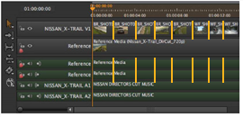
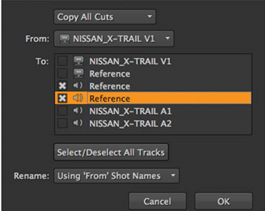

的 复制剪切 功能允许您在时间轴上将一个轨迹的切割快速应用于其他轨迹。例如，在所示的时间线中，您可以将第二个视频轨道的切割复制到参考音轨。

要复制切割:
| 1。 | 选择包含要复制的切割的剪辑实例，或者如果您打算复制轨迹中的所有切割，则不需要进行选择。 |
| 2. | 在时间线中单击鼠标右键，然后选择 编辑 > 复制剪切 . |
的 复制剪切 对话框显示。

| 3. | 如果您在时间轴上进行了选择，请使用下拉菜单选择 复制所有切割 或 复制选定的切割 根据需要。 |
如果没有选择剪辑实例，则不会显示此下拉列表。
| 4. | 单击 从 下拉菜单选择源轨道。 |
| 5. | 检查中的所有目标轨迹 到 要将切割复制到的字段。 |
| 6. | 选择是否将生成的剪辑实例命名为源轨迹。 |
选择 没有 保留目标剪辑名称。
| 7. | 单击 好 将切割复制到目标轨道。 |
|
|